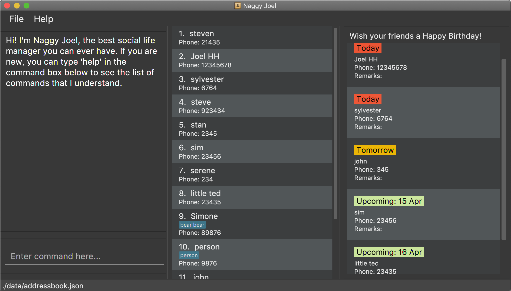

By: Naggy Joel Since: Jan 2020 Licence: MIT
1. Introduction
Does the name Naggy Joel sound like a very boring application? Fret not, it is actually the exact opposite! It helps you maximise your time to get as much fun as you can amidst your hectic work schedule. In fact, it aims to help you be the best friend that you can ever be!
Naggy Joel is for those who prefer to use a desktop app for managing their social life. It is an application that allows a user to manage all aspects of their social life, ranging from their different social circles and contacts, to their events and deadlines, as well as, places to hang out and potential practical gifts that will be very much appreciated by the recipient. More importantly, Naggy Joel is optimized for those who prefer to work with a Command Line Interface (CLI) while still having the benefits of a Graphical User Interface (GUI). If you can type fast, Naggy Joel can get social life managed faster than traditional GUI apps. Interested? Jump to Section 2, “Quick Start” to get started. Enjoy!
2. Quick Start
-
Ensure you have Java
11or above installed in your Computer. -
Download the latest
naggyjoel.jarhere. -
Copy the file to the folder you want to use as the home folder for Naggy Joel.
-
Double-click the file to start the app. The GUI should appear in a few seconds.
 -
Type the command in the command box and press Enter to execute it.
e.g. typinghelpand pressing Enter will open the help window. -
Some example commands you can try:
-
list: lists all contacts -
addn/John Doe p/98765432 e/johnd@example.com a/John street, block 123, #01-01: adds a contact namedJohn Doeto the Address Book. -
delete3: deletes the 3rd contact shown in the current list -
exit: exits the app
-
-
Refer to Section 3, “Features” for details of each command.
3. Features
Command Format
* Words in UPPER_CASE are the parameters to be supplied by the user e.g. in (ab)add n/NAME, NAME is a parameter which can be used as add n/John Doe.
* Items in square brackets are optional e.g n/NAME [t/TAG] can be used as n/John Doe t/friend or as n/John Doe.
* Items with … after them can be used multiple times including zero times e.g. [t/TAG]… can be used as (i.e. 0 times), t/friend, t/friend t/family etc.
* Parameters can be in any order e.g. if the command specifies n/NAME p/PHONE_NUMBER, p/PHONE_NUMBER n/NAME is also acceptable.
3.1. General Commands
3.1.1. Viewing help : help
Format: help
3.1.2. Undo and redo commands: undo/redo
Undoes and redoes the last command.
Format: undo/redo
3.1.3. Clearing all entries : clear
Clears all entries from the address book, schoolwork tracker, events book and restaurant book.
Format: clear
3.1.4. Exiting the program : exit
Exits the program.
Format: exit
3.2. Address Book Commands
3.2.1. Adding a person: (ab)add
Adds a person to the address book
Format: (ab)add n/NAME p/PHONE_NUMBER [e/EMAIL] [a/ADDRESS] [t/TAG] [g/ORGANIZATION] [b/BIRTHDAY]
| A person can have any number of tags (including 0) BIRTHDAY must be written in a MM-dd format. Fields inside square brackets are optional. |
Examples:
-
(ab)add n/Akshay g/NUS -
(ab)add n/Joel HH e/joel@yahoo.com.sg p/12345678 o/NUS a/Pasir Ris St. 71, Blk 123, #01-79 -
(ab)add n/Aisyle Nat e/aisyle@gmail.com p/87654321 b/02-12 o/NUS -
(ab)add n/ Benjamin t/CS2103
3.2.2. Deleting a person : (ab)delete
Deletes the contact at index INDEX
Format: (ab)delete INDEX
Examples:
-
(ab)delete 2
Deletes the 2nd person in the address book.
3.2.3. Editing a person : (ab)edit
Edits an existing person in the address book.
Format: (ab)edit INDEX [n/NAME] [p/PHONE_NUMBER] [e/EMAIL] [a/ADDRESS] [o/ORGANIZATION] [b/BIRTHDAY]
Examples:
-
(ab)edit 37 a/2 Cactus Road, S903281
Changes the 37th person’s address to 2 Cactus Road, S903281. -
(ab)edit 2 n/Elysia Tan o/Comp Club
Changes the second person’s name to Elysia Tan, and organization to Comp Club.
3.2.4. Adding tags to a person : (ab)addtag
Allows you to add additional tags to your contacts.
Format: (ab)addtag INDEX [t/TAG]
Examples:
-
(ab)addtag 37 t/noobAdds the tag “noob” to the person at index 37
3.2.5. Removing tags from a person : (ab)rmtag
Allows you to remove tags from your contacts.
Format: (ab)rmtag INDEX t/[TAG]
Examples:
-
(ab)rmtag 37 t/noob
Removes the tag “noob” from the person at index 37
3.2.6. Store additional information about contacts using the Note Taker: (ab)addnote
Store additional information about contacts using the Note Taker
Format: (ab)addnote INDEX i/INFO1 i/INFO2 …
3.2.7. Edit additional information about contacts: (ab)editnote
Edit additional information about contacts using the Note Taker
Format: (ab)editnote INDEX [-l/LINE_NUMBER] i/INFO
3.2.8. Delete additional information about contacts: (ab)deletenote
Delete additional information about contacts using the Note Taker
Format: (ab)deletenote INDEX [-l/LINE_NUMBER]
3.2.9. Finding a specific contact/a specific set of contacts: (ab)find
Lists out all your contacts in the address book which match a certain criteria. Each contact will have a displayed index. Only the contact’s name, phone number and tags (if present) will be listed
Format: (ab)find [-g/GROUPNAME] [-n/WORD] [-t/TAG]
Examples:
* (ab)find -g/NUS -n/Lim
Finds and lists all contacts that is in group “NUS” and have the word “Lim” in his name
3.2.10. List contacts in a particular order: (ab)sort
Displays the list of contacts in a certain sorted order
Format: ab sort [-f] [-o] [-b]
Examples:
* (ab)sort -a
Lists all contacts alphabetically
3.2.11. List everything about a contact in field: (ab)get
Format: (ab)get INDEX
3.3. Restaurant Book commands
3.3.1. Adds a new restaurant: (rt)add
Adds a new restaurant
Format: (rt)add n/NAME l/LOCATION v/VISITED [o/OPERATING_HOURS] [p/PRICE_POINT] [c/CUISINE]
Examples:
-
(rt)add rubbish l/bedok o/0900:2300 p/$$
Adds a new restaurant called rubbish at bedok with 2 dollar signs price point and opens from 9am to 11pm
3.3.2. Deletes a restaurant: (rt)delete
Deletes a restaurant from the list
Format: (rt)delete INDEX
3.3.3. Add notes to a restaurant: (rt)notes
Adds a new note to a restaurant
Format: (rt)addnote INDEX [r/RECOMMENDED_FOOD] [a/GOOD_FOOD] [b/BAD_FOOD]
Examples:
-
(rt)addnote 5 r/chicken chop a/truffle fries b/risotto
Adds a notes to the restaurant at index 5 with recommended food Chicken Chop, good food Truffle Fries, and bad food Risotto.
3.3.4. Search: (rt)search
Search for restaurants based on a number of criteria.
Format: (rt)search [k/KEYWORD] [l/LOCATION] [p/PRICE_POINT] [o/OPERATING_HOURS]
Examples:
-
(rt)search k/no signboard p/$$
Searches for restaurants with the keyword no signboard which is at a medium price point. -
(rt)search l/bedok p/$
Searches for restaurants in the bedok area at a low price point.
3.4. Schoolwork Tracker commands
3.4.1. Add new assignment to the Schoolwork Tracker: (st)add
Adds a new assignment to your list of assignments and projects.
Format: (st)add t/TITLE d/DEADLINE e/ESTIMATED_COMPLETION_TIME
Examples:
-
(st)add t/CS2103 post lecture quiz d/2020-02-11 23:59 e/1
Adds an assignment titled CS2103 post lecture quiz to the Schoolwork Tracker, due 11-02-2020 23:59 and which takes an estimated one hour to complete.
3.4.2. Delete assignment: (st)delete
Deletes an assignment.
Format: (st)delete INDEX
3.4.3. List current assignments: (st)list
Sorts the user’s list of assignments and displays them. This helps the user choose which assignment to do first. By default, it sorts the list in alphabetical order.
Format: (st)list [-d/DEADLINE] [-e/ESTIMATED_COMPLETION_TIME]
3.4.4. Mark assignment as completed: (st)done
Marks an assignment as completed.
Format: (st)done INDEX
3.4.5. Visualise the intensity of your upcoming schedule: (st)schedule visual
Looks through the list of current uncompleted assignments to calculate the estimated work hours per day to complete all assignments by their deadlines
Format: (st)schedule n/NUM_DAYS
3.5. Event Book commands
3.5.1. Create a new social event: event
Creates a social event.
Format: event et/EVENT_TITLE edt/EVENT_DATE ed/DURATION ep/LOCATION
3.5.2. Listing all events: eventlist
Lists all social events in your Event Book.
Format: eventlist
3.6. Saving the data
Address book, Schoolwork Tracker, Event Book and Restaurant Book data are saved in the hard disk automatically after any command that changes the data.
There is no need to save manually.
3.7. Coming in v2.0
3.7.1. Add person to assignment: (st)addmem
Adds a group mate to an assignment.
Format: (st)addmem INDEX p/INDEX_1 p/INDEX_2 p/INDEX_3
3.7.3. Encrypting data files
{explain how the user can enable/disable data encryption}
4. FAQ
Q: How do I transfer my data to another Computer?
A: Install the app in the other computer and overwrite the empty data file it creates with the file that contains the data of your previous Address Book folder.
5. Command Summary
-
Add
add n/NAME p/PHONE_NUMBER e/EMAIL a/ADDRESS [t/TAG]…
e.g.add n/James Ho p/22224444 e/jamesho@example.com a/123, Clementi Rd, 1234665 t/friend t/colleague -
Clear :
clear -
Delete :
delete INDEX
e.g.delete 3 -
Edit :
edit INDEX [n/NAME] [p/PHONE_NUMBER] [e/EMAIL] [a/ADDRESS] [t/TAG]…
e.g.edit 2 n/James Lee e/jameslee@example.com -
Find :
find KEYWORD [MORE_KEYWORDS]
e.g.find James Jake -
List :
list -
Help :
help